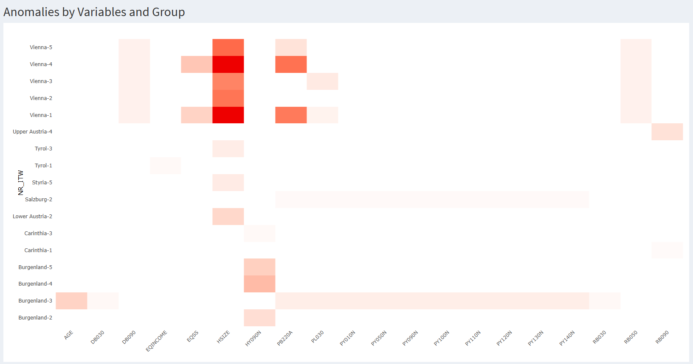
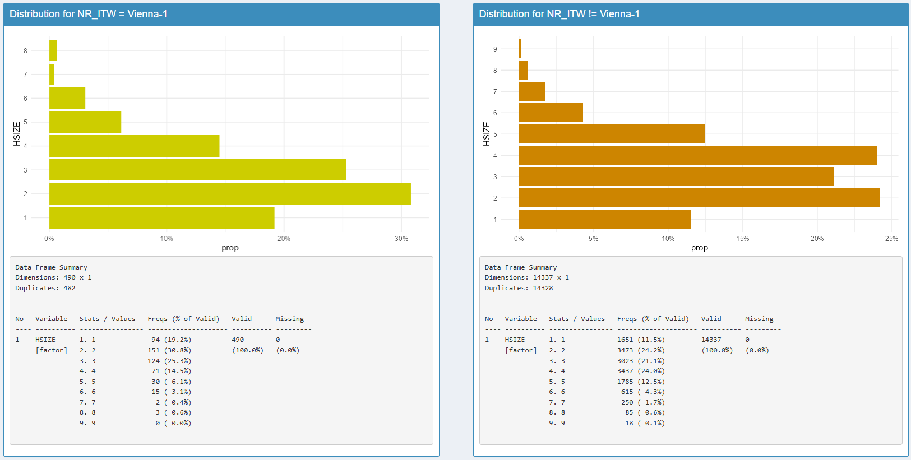
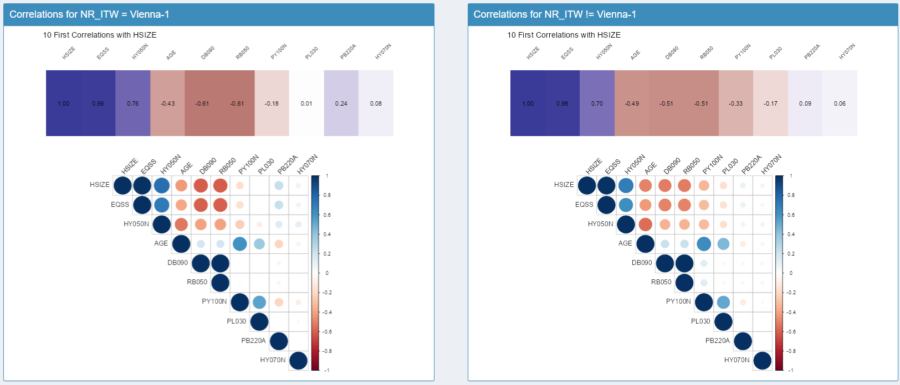
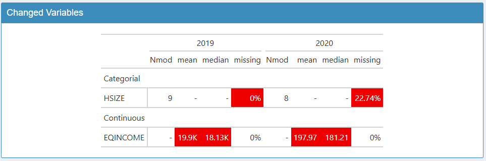
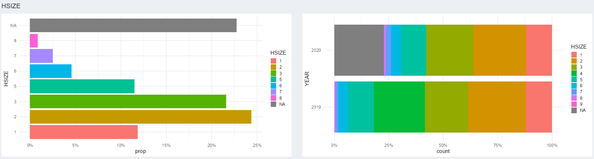

vizsurvey is an R package designed to streamline the quality assessment of survey data by providing intuitive visual diagnostics through an interactive dashboard. vizsurvey is especially useful for institutions or researchers conducting large-scale surveys with multiple interviewers, enabling a fast and systematic overview of data quality over time.
Key features
- Interactive Shiny dashboard for real-time data exploration
- Automated computation of summary statistics by wave, zone, or group
- Heatmap visualization for anomaly detection
- Tools for preparing and managing multiple survey datasets
Full documentation and vignettes are available (currently available in French) at https://tdelc.github.io/vizsurvey
Installation
You can install the development version of vizsurvey from github like so:
install.packages("devtools") # if necessary
library(devtools)
devtools::install_github("tdelc/vizsurvey")A CRAN release is planned once version 1.0.0 is reached.
What is vizsurvey ?
vizsurvey provides a comprehensive set of R functions designed to automate key statistical computations on survey data by wave or group. These functions ensure that summary indicators, distributions, and consistency checks can be produced efficiently and reproducibly across multiple survey waves. At the core of these analyses lies the heatmap module, a graphical function (in ggplot and plotly) that visualizes deviations and irregularities at a glance, making it easier to detect outliers or recurring anomalies. Together, the computational tools, visualization features, and interactive Shiny dashboard make vizsurvey a complete environment for the monitoring, exploration, and quality assessment of survey data.
How to use vizsurvey ?
vizsurvey can be used in two complementary ways. First, users can call its core R functions directly to generate summary statistics or to produce the heatmap visualizations programmatically. These functions are fully documented and illustrated in a dedicated vignette (currently available in French, with an English version forthcoming). This approach is ideal for integration into automated workflows or reproducible reports.
Alternatively, users can simply launch the interactive dashboard, which provides an intuitive graphical interface for exploring survey data, filtering by wave or group, and visualizing anomalies in real time. The function runVizsurvey is the easier way to launch the dashboard. It will be empty, you will then need to load your own dataset.
Considering the group effect (for example an interviewer effect), anomalies are displayed in a heatmap by group and by variable. Each cell can be clicked to display detailed plots showing the distribution of responses and the comparison between the group and the rest of the population.

For the wave effect, a list of detected anomalies is provided, together with a set of dedicated figures that help users understand the nature and potential source of each issue.

All the use of the interactive dashboard is documented in a vignette.
We can also launch the dashboard with a specific dataset. Here is an example with a R dataset. We use the eusilc dataset from laeken and add a fake interviewer id.
# EU-SILC data
library(laeken)
data(eusilc)
# Fake ID
set.seed(123)
eusilc$NR_ITW <- paste(eusilc$NR_ITW,sample(1:5,nrow(eusilc),replace = T),sep="-")
# Vizsurve
runVizsurvey_from_r(eusilc,var_group = "NR_ITW",var_zone = "db040")We can also launch the dashboard directly with a CSV file. We provide some Public Use Files for EU-SILC from Eurostat.
path <- "inst/extdata/SILC/HFILE/BE_2012h_EUSILC.csv"
runVizsurvey_from_file(path,var_group = "NR_ITW",var_zone = "db040")A dedicated vignette also describes how to prepare the data required to use the dashboard from vizsurvey through the function runVizsurvey_from_folder. This functionality is specifically designed for institutions managing multiple surveys on a regular basis, often involving several team members in the process. In such contexts, launching the dashboard manually for each dataset can quickly become inefficient, and computing differences by domain or group may require substantial resources. To address this, vizsurvey provides a set of automated data preparation functions, allowing teams to structure their files consistently and generate all necessary objects for the application to run smoothly and systematically across multiple surveys.
# We assume that config.txt, and prepa_surveys are already done here.
# See vignette to learn how to prepare data folders
runVizsurvey_from_folder("inst/extdata",depth_folder = 3)Development Notes
Current Version : 0.2.0
The names of the functions and arguments in vizsurvey are still under evaluation and may evolve based on early user feedback. As the package is currently in its initial development phase, some naming conventions may be refined to improve clarity, consistency, and usability. Our goal is to achieve full naming stability starting from version 1.0.0, once the package has benefited from the first round of testing and contributions from the community.
vizsurvey builds upon a wide range of existing R packages, combining robust data-processing tools with flexible visualization and dashboard components. Two main layers can be distinguished in the package architecture:
Core computation layer (data preparation and analysis) mostly based on the tidyverse ecosystem and related packages, ensuring readability and efficiency in handling large survey datasets :
cli,data.table,dplyr,lubridate,magrittr,purrr,rlang,scales,stats,tibble,tidyr,tidyselectDashboard and visualization layer providing an interactive interface to explore results, monitor anomalies, and visualize distributions :
ggplot2,corrplot,DT,gt,plotly,shiny,shinydashboard,summarytools